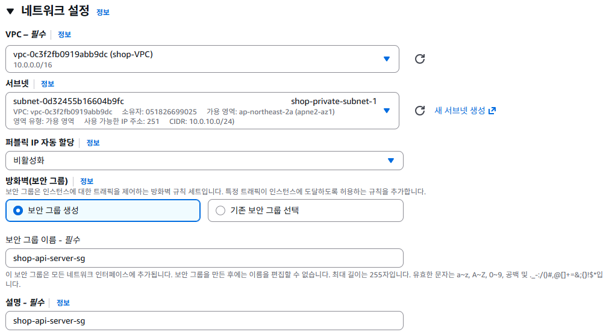
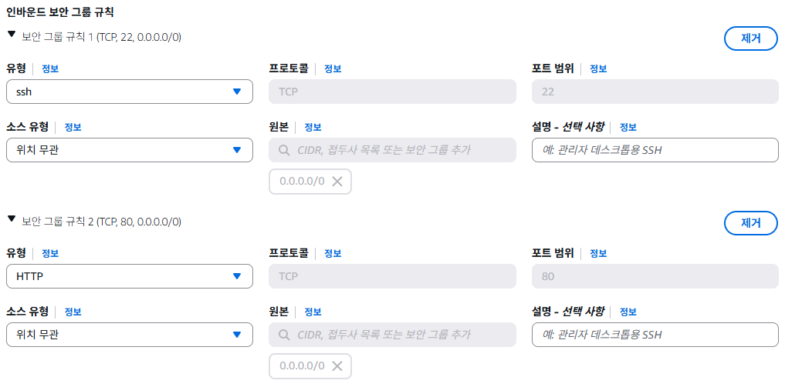
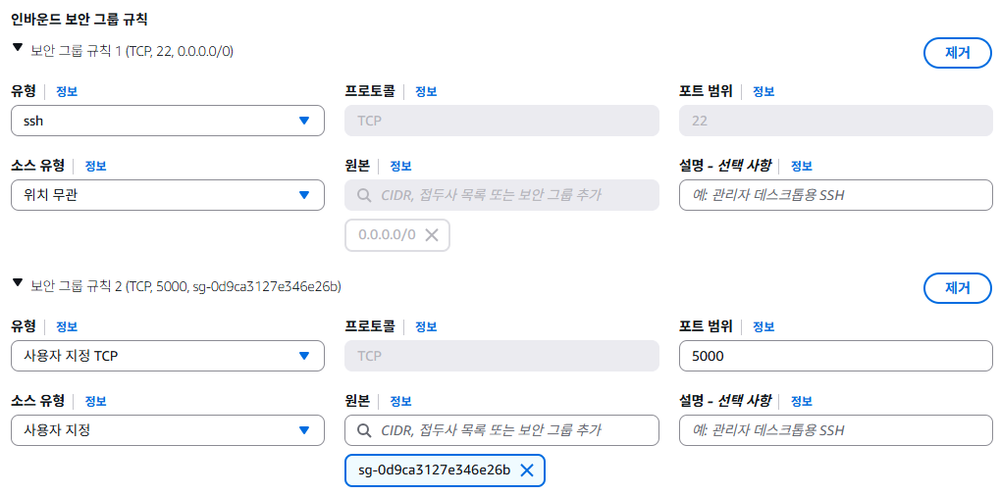
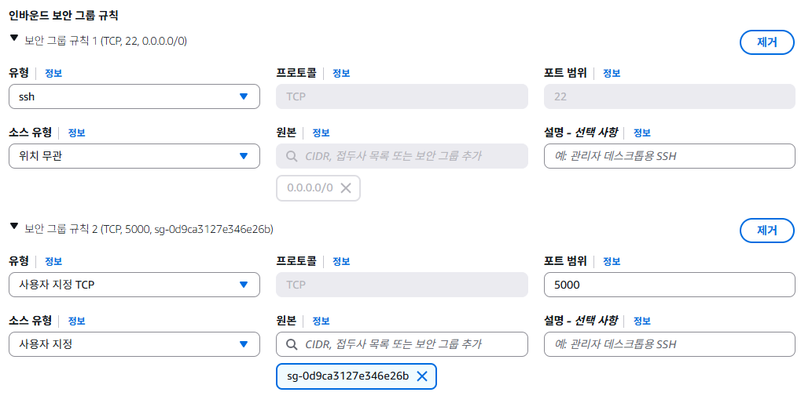

이커머스를 VPC에 재배포
학습 목표
- 기존 EC2 배포 방식의 보안 문제점을 이해한다
- 퍼블릭/프라이빗 서브넷을 활용한 2-tier 아키텍처를 설계한다
- ShopEasy 이커머스 앱을 VPC 기반으로 재배포한다
- 보안그룹 체이닝으로 서비스 간 통신을 제어한다
현재 상태 복습
지금까지 우리는 ShopEasy 이커머스 앱을 EC2에 배포했습니다. 프론트엔드(React)와 API 서버(Node.js) 모두 퍼블릭 서브넷의 EC2 인스턴스에서 동작하고 있죠. 현재 구조를 정리해보겠습니다.
Nginx + React
포트: 80
Node.js + SQLite
포트: 5000
현재 구조의 문제점
- API 서버가 인터넷에 직접 노출 - 누구나 API 서버의 퍼블릭 IP로 직접 접근 가능
- 보안그룹만으로 보호 - 보안그룹 설정 실수 하나로 데이터베이스가 노출될 위험
- 네트워크 분리가 안 됨 - 프론트엔드와 백엔드가 같은 네트워크 레벨에 존재
- 확장성 부족 - 로드밸런서 없이 단일 서버로 운영
현재 상태는 마치 가게의 매장(프론트엔드)과 금고(API 서버+DB)가 모두 길가에 나와 있는 것과 같습니다. 누구나 금고까지 직접 걸어갈 수 있는 상태죠. 우리가 해야 할 일은 매장은 길가에 두되, 금고는 건물 안쪽으로 옮기는 것입니다.
왜 VPC에 재배포해야 하나?
보안 강화
API 서버를 프라이빗 서브넷에 배치하면, 인터넷에서 직접 접근이 물리적으로 불가능합니다. 보안그룹 설정을 실수하더라도, 프라이빗 서브넷에는 인터넷 게이트웨이로의 경로가 없기 때문에 외부에서 접근할 수 없습니다.
네트워크를 역할별로 나누는 것은 보안의 기본 원칙입니다. 외부와 통신해야 하는 서버(웹 서버)는 퍼블릭 서브넷에, 내부에서만 동작하면 되는 서버(API, DB)는 프라이빗 서브넷에 배치합니다. 이를 2-tier 또는 3-tier 아키텍처라고 합니다.
실무 표준 아키텍처
실무에서 거의 모든 웹 서비스는 이 구조를 따릅니다:
| 계층 | 위치 | 역할 | 인터넷 접근 |
|---|---|---|---|
| 프론트엔드/웹 서버 | 퍼블릭 서브넷 | 사용자 요청 수신 | 가능 (인바운드/아웃바운드) |
| API/애플리케이션 서버 | 프라이빗 서브넷 | 비즈니스 로직 처리 | 아웃바운드만 (NAT 통해) |
| 데이터베이스 | 프라이빗 서브넷 | 데이터 저장 | 불가 |
회사 건물을 생각해보세요. 1층 로비(퍼블릭 서브넷)에는 안내데스크(프론트엔드)가 있어서 방문객이 자유롭게 들어올 수 있습니다. 하지만 사무실(프라이빗 서브넷)에 들어가려면 출입카드가 필요하죠. 서버 룸(DB)은 더 안쪽에 있어서 특정 직원만 접근할 수 있습니다. 사무실 직원이 외부에 택배를 보내려면(인터넷 접근) 1층 우편실(NAT 게이트웨이)을 통해야 합니다.
보안그룹 체이닝
VPC 구조에서는 보안그룹 체이닝이라는 강력한 보안 패턴을 사용할 수 있습니다. IP 주소 대신 보안그룹 ID를 참조하여 "이 보안그룹에 속한 인스턴스만 접근 허용"이라고 설정하는 것입니다.
IP 주소로 허용하면 서버가 바뀔 때마다 보안그룹을 수정해야 합니다. 하지만 보안그룹 ID로 참조하면, 해당 보안그룹에 새 서버를 추가하기만 하면 자동으로 접근이 허용됩니다. Auto Scaling으로 서버가 늘어날 때 특히 유용합니다.
아키텍처 설계
우리가 구축할 아키텍처는 다음과 같습니다:
SG: 80(모든곳)
SG: 5000(프론트SG만)
핵심 설계 포인트
- 프론트엔드 EC2: 퍼블릭 서브넷에 배치, 인터넷에서 HTTP(80) 접근 가능
- API 서버 EC2: 프라이빗 서브넷에 배치, 프론트엔드 EC2에서만 5000번 포트 접근 가능
- NAT 게이트웨이: 프라이빗 서브넷의 API 서버가 npm 패키지 설치 등 인터넷 접근이 필요할 때 사용
- 보안그룹 체이닝: API 서버 보안그룹에서 프론트엔드 보안그룹 ID를 소스로 지정
이번 실습에서는 새로운 EC2 인스턴스를 생성합니다. 기존에 만든 EC2 인스턴스는 비교를 위해 잠시 유지하되, 실습이 끝나면 중지하여 비용을 절약하세요.
실습
NAT 게이트웨이는 시간당 약 $0.045의 비용이 발생합니다. 실습이 끝난 후 반드시 삭제하세요. EC2 인스턴스는 t2.micro 프리티어를 사용합니다.
이전 챕터(Chapter 8, 9)에서 생성한 VPC, 서브넷, 인터넷 게이트웨이, NAT 게이트웨이가 이미 있다고 가정합니다. 없다면 먼저 해당 챕터의 실습을 완료하세요.
-
VPC 및 서브넷 확인
이전에 생성한 VPC 리소스가 있는지 확인합니다.
AWS 콘솔 → VPC → Your VPCs로 이동합니다.
- VPC:
shop-vpc(10.0.0.0/16) 확인 - 퍼블릭 서브넷:
shop-public-subnet-2a(10.0.1.0/24) 확인 - 프라이빗 서브넷:
shop-private-subnet-2a(10.0.10.0/24) 확인 - 인터넷 게이트웨이: VPC에 연결되어 있는지 확인
- NAT 게이트웨이: 퍼블릭 서브넷에 생성되어 있는지 확인
리소스가 없다면?Chapter 8, 9 실습을 먼저 완료하거나, 아래 AWS CLI 명령어로 빠르게 생성할 수 있습니다.
bash# VPC 생성 aws ec2 create-vpc --cidr-block 10.0.0.0/16 --tag-specifications 'ResourceType=vpc,Tags=[{Key=Name,Value=my-vpc}]' # 퍼블릭 서브넷 생성 aws ec2 create-subnet --vpc-id <vpc-id> --cidr-block 10.0.1.0/24 --availability-zone ap-northeast-2a --tag-specifications 'ResourceType=subnet,Tags=[{Key=Name,Value=public-subnet-a}]' # 프라이빗 서브넷 생성 aws ec2 create-subnet --vpc-id <vpc-id> --cidr-block 10.0.2.0/24 --availability-zone ap-northeast-2a --tag-specifications 'ResourceType=subnet,Tags=[{Key=Name,Value=private-subnet-a}]' - VPC:
-
프론트엔드 EC2 및 보안그룹 생성
AWS 콘솔 → EC2 → Instances → Launch instances
- Name:
shop-front - AMI: Amazon Linux 2023
- Instance type: t2.micro (프리티어)
- Key pair: 기존 키페어 선택
Network settings에서 Edit 클릭:
- VPC:
shop-VPC - Subnet:
shop-public-subnet-1 - Auto-assign public IP: Enable
- Security group:
shop-frontend-sg(보안 그룹 생성)- Security group name:
shop-frontend-sg - Description:
shop-frontend-sg - VPC:
shop-VPC선택
- Security group name:
Inbound rules에서 Add rule 클릭:
 Type Port Source 설명 SSH 22 내 IP SSH 접속 (관리용) HTTP 80 0.0.0.0/0 웹 브라우저 접근 Launch instance 클릭
- Name:
-
API 서버 EC2 및 보안그룹 생성
AWS 콘솔 → EC2 → Instances → Launch instances
- Name:
shop-api-server - AMI: Amazon Linux 2023
- Instance type: t2.micro (프리티어)
- Key pair: 기존 키페어 선택
Network settings에서 Edit 클릭:
- VPC:
shop-VPC - Subnet:
shop-private-subnet-1 - Auto-assign public IP: Disable
- Security group:
shop-api-server-sg(보안 그룹 생성)- Security group name:
shop-api-server-sg - Description:
shop-api-server-sg - VPC:
shop-VPC선택
- Security group name:
Inbound rules에서 Add rule 클릭:
Type Port Source 설명 SSH 22 shop-frontend-sg 프론트엔드를 통한 SSH (Bastion) Custom TCP 5000 shop-frontend-sg 프론트엔드에서만 API 접근 비유로 이해하기: 보안그룹 체이닝Source에 IP 대신 보안그룹 ID를 넣는 것은, "이 출입증(shop-frontend-sg)을 가진 사람만 들어올 수 있다"라고 설정하는 것입니다. IP 주소가 바뀌어도 상관없이, 해당 보안그룹에 속해 있기만 하면 접근이 허용됩니다.
 

Launch instance 클릭
프라이빗 서브넷 EC2는 퍼블릭 IP가 없습니다프라이빗 서브넷의 EC2에는 퍼블릭 IP가 할당되지 않습니다. SSH 접속은 프론트엔드 EC2를 Bastion Host(점프 서버)로 사용해야 합니다.
- Name:
-
프론트엔드 EC2에 SSH 접속 후 Nginx + React 배포
프론트엔드 EC2에 SSH로 접속합니다.
bash# 프론트엔드 EC2에 SSH 접속 ssh -i my-keypair.pem ec2-user@<프론트엔드-퍼블릭-IP>Nginx 설치 및 설정:
bash# 시스템 업데이트 및 Nginx 설치 sudo dnf update -y sudo dnf install -y nginx # Nginx 시작 및 부팅 시 자동 시작 설정 sudo systemctl start nginx sudo systemctl enable nginxReact 앱 빌드 파일을 배포합니다. 먼저 Node.js를 설치하고 프로젝트를 빌드합니다:
bash# Node.js 설치 curl -fsSL https://rpm.nodesource.com/setup_18.x | sudo bash - sudo dnf install -y nodejs # 프로젝트 클론 git clone https://github.com/your-repo/ecommerce-app.git cd ecommerce-app/frontend # 환경변수 설정 - API 서버의 프라이빗 IP를 지정 echo "VITE_API_URL=http://<프론트엔드-퍼블릭-IP>/api" > .env # 빌드 npm install npm run build # 빌드 파일을 Nginx 웹 루트에 복사 sudo cp -r dist/* /usr/share/nginx/html/Nginx에 리버스 프록시 설정을 추가합니다 (API 요청을 프라이빗 서브넷의 API 서버로 전달):
bash# Nginx 설정 파일 편집 sudo tee /etc/nginx/conf.d/shopeasy.conf > /dev/null <<'EOF' server { listen 80; server_name _; root /usr/share/nginx/html; index index.html; # React SPA 라우팅 location / { try_files $uri $uri/ /index.html; } # API 요청을 프라이빗 서브넷의 API 서버로 프록시 location /api/ { proxy_pass http://<API-서버-프라이빗-IP>:5000/api/; proxy_set_header Host $host; proxy_set_header X-Real-IP $remote_addr; proxy_set_header X-Forwarded-For $proxy_add_x_forwarded_for; } } EOF # 기본 설정 파일의 server 블록 비활성화 sudo sed -i 's/listen 80;/# listen 80;/' /etc/nginx/nginx.conf # 설정 테스트 및 재시작 sudo nginx -t sudo systemctl restart nginx -
프라이빗 EC2에 SSH 접속 (Bastion Host 경유)
프라이빗 서브넷의 API 서버에 직접 SSH 접속은 불가능합니다. 프론트엔드 EC2를 Bastion Host(점프 서버)로 사용합니다.
비유로 이해하기: Bastion HostBastion Host는 건물의 경비실과 같습니다. 외부인이 건물 내부(프라이빗 서브넷)에 들어가려면, 먼저 경비실(Bastion Host)을 거쳐야 합니다. 경비실에서 신원 확인이 된 후에만 내부로 진입할 수 있죠.
bash# Local에서 Key가 있는 위치에서 시작한 후 아래 명령어 실행 # 로컬에서 SSH Agent에 키 추가 ssh-add my-keypair.pem # -A 옵션으로 Agent Forwarding 활성화 ssh -A -i my-keypair.pem ec2-user@<프론트엔드-퍼블릭-IP> # 프론트엔드에서 API 서버로 키페어 파일 없이 접속 가능 ssh ec2-user@<API-서버-프라이빗-IP> -
API 서버 EC2에 Node.js 앱 배포
API 서버 EC2에 접속한 상태에서 Node.js와 앱을 설치합니다.
인터넷 연결이 안 된다면?프라이빗 서브넷의 라우팅 테이블에 NAT 게이트웨이로의 경로(0.0.0.0/0 → NAT GW)가 설정되어 있는지 확인하세요. Chapter 9에서 설정한 내용입니다.
bash# Node.js 설치 curl -fsSL https://rpm.nodesource.com/setup_18.x | sudo bash - sudo dnf install -y nodejs git # 프로젝트 클론 git clone https://github.com/your-repo/ecommerce-app.git cd ecommerce-app/api-server # 의존성 설치 npm install # 환경변수 설정 cat > .env <<'EOF' PORT=5000 DB_TYPE=sqlite NODE_ENV=production EOF # 서버 시작 (백그라운드) npm start &API 서버가 정상적으로 실행되는지 확인합니다.
bash# API 서버 상태 확인 curl http://localhost/api/products -
프론트엔드에서 API 연동 확인
프론트엔드 EC2에서 프라이빗 서브넷의 API 서버에 접근이 되는지 확인합니다.
bash# 프론트엔드 EC2에서 API 서버 접근 테스트 curl http://<API-서버-프라이빗-IP>/api/products이제 브라우저에서 프론트엔드 EC2의 퍼블릭 IP로 접속합니다.
bash# 브라우저에서 접속 http://<프론트엔드-퍼블릭-IP>ShopEasy 쇼핑몰이 정상적으로 로드되고, 상품 목록이 표시되면 성공
- 프론트엔드를 퍼블릭 서브넷에 배치하여 인터넷에서 접근 가능
- API 서버를 프라이빗 서브넷에 배치하여 외부 접근 차단
- 보안그룹 체이닝으로 프론트엔드 → API 통신만 허용
- NAT 게이트웨이를 통해 프라이빗 EC2의 인터넷 접근 확보
- Bastion Host 패턴으로 프라이빗 EC2 관리